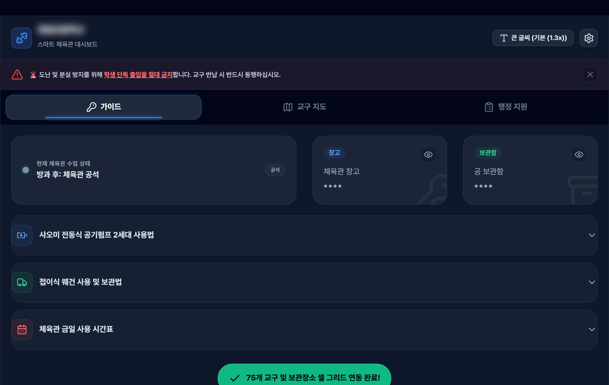
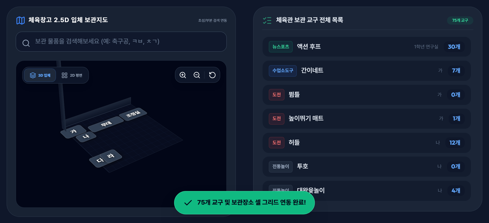
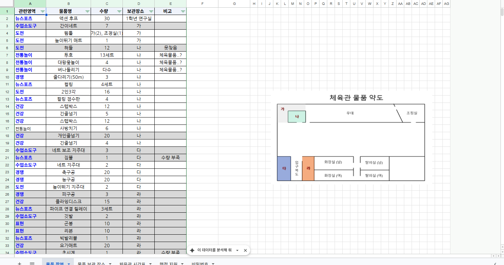

체육관 교구 지도 대시보드

창고에서 흘려보낸 시간, 기억하세요?
여러 학급이 함께 쓰는 체육관 창고는 금세 뒤죽박죽이 됩니다. "그 허들 어디 뒀더라", "축구공 몇 개 남았지" — 머릿속 장부와 종이 목록에 기대다 보면, 교구 하나 찾는 데 매번 몇 분씩 사라지죠. 박덕구쌤도 그 시간이 아까워서, 이번엔 체육관을 통째로 디지털로 옮겨봤습니다. 😅
지도에서 바로 찾습니다
체육창고를 2.5D 입체 지도로 그려두고, 가·나·다·라 구역마다 어떤 교구가 몇 개 있는지 연동했어요. 검색창에 "축구공"은 물론 "ㅊㄱ" 초성만 쳐도 위치가 뜹니다. 75개 교구 전체 목록이 구글 시트와 실시간으로 맞물려 돌아가서, 재고를 손으로 세던 수고가 그대로 줄어듭니다.

맵은 구글 시트로 관리해요
화려해 보이는 저 2.5D 입체 지도랑 교구 목록, 사실은 구글 시트 한 장에서 나옵니다. 😲 "체육관 물품 장부" 시트에 관련영역·물품명·수량·보관장소(가/나/다/라)·비고만 적어두면, 그대로 대시보드 맵과 목록에 반영돼요. 시트 오른쪽에 그려둔 '체육관 물품 약도'가 앱의 구역 지도와 짝을 이룹니다.
덕분에 코딩을 몰라도 유지보수가 됩니다. 교구가 늘거나 자리가 바뀌면, 관리자쌤이 늘 쓰던 구글 시트에서 칸만 고치면 끝. 앱을 다시 손댈 일이 없으니 관리가 의무가 되지 않아요. 익숙한 시트 그대로 두고, 화면만 예쁘게 얹은 셈이죠. 🐈

요청할 데가 생겼습니다
공 밸브가 망가졌는데 어디다 말하지? 하다가 그냥 넘어가던 것들 있으시죠. 비품 파손·정비 요청, 사고 싶은 교구 리스트, 행정 코멘트를 폼 하나로 접수하고 현황판에서 모아 봅니다. 흩어지던 요청이 한자리에 쌓이니, 체육부장쌤 손이 한결 가벼워져요.
가이드는 덤이에요
전동 공기펌프 사용법(종목별 권장 공기압까지), 웨건 보관법, 오늘 체육관 시간표에 지금 비었는지까지 — 여러 쌤이 같이 쓰는 체육관이 한 화면에 정리됩니다. 교구 찾느라 쓰던 시간, 이제 통째로 아끼세요. 손 덜 가는 체육관, 그 시작이 창고 정리일 줄은 저도 몰랐네요. 🐈
써보러 가기 →교구 데이터는 학교별 구글 시트에 맞춰 연동돼요. 화면 속 재고·시간표는 예시입니다.
만드는 재미로 사는 초등쌤, 박덕구 🐈